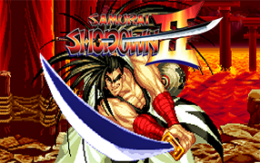

快打旋風初代
最元祖的快打旋風，在節奏和攻擊判定上還未完善，但奠定了"指令發招"的基礎

快打旋風II:世界勇士
格鬥遊戲歷史上重要的一部作品，大多人想到快打旋風都是二代，此代也是格鬥判定機制頗有起色的世代
快打旋風Zero3
將畫面風格精緻卡通化，並且節奏加快，加入戰鬥偏好的三種模式跟更多反制的機制
快打旋風III:3rd-Strike
角色與二代熟悉的陣容完全不同，但是機制非常完善的一代，因梅原大吾和賈斯汀Wong的一場背水大逆轉比賽而備受關注

超級快打旋風II:絕世高人
以經典的二代為基底加入更多角色以及連招，並首次加入了必殺量槽的系統
VR快打1
SEGA推出的3D多邊形格鬥遊戲，帶起了一股3D格鬥遊戲的風潮，戰鬥風格皆以現實有的格鬥術為基底
街頭快打1
街頭快打為"Beat'em up"類型中最為知名的清版動作遊戲，與快打旋風為同一個世界觀
街頭快打2
首次加入女性角色可選擇並且更換戰鬥舞台及主要角色

街頭快打3
增加更多角色以及普通必殺技，並且有消耗氣量槽的大必殺技可使用

拳皇98
SNK於1998開發的格鬥遊戲，該作的穩定度和平衡度有高人氣的正評，為無劇情的總集篇作品

侍魂II
SNK的招牌格鬥遊戲之一，也是當年少數和快打旋風的風格做出區隔的作品之一
魔域幽靈
和快打旋風同為卡普空開發的格鬥遊戲之一，角色風格多為奇幻的各國神話文化和靈異故事角色

瑪莉兄弟
在最知名的超級瑪莉兄弟之前的作品，玩法為頂撞烏龜並撞擊倒地的烏龜，地圖邊緣可自由穿梭
瑪莉歐夢工廠
雖有多種標題為超級瑪莉2，實際上為任天堂的"夢工廠悸動恐慌"將角色更換為瑪莉歐的人物，別稱為瑪利歐兄弟USA

獸王記
橫向闖關的經典街機作品，會隨著打倒敵人吸收道具，最後變身為獸王能力大幅提升
大金剛
極為經典的街機遊戲，以瑪莉歐為主角，閃避森喜剛丟下的木桶並達到頂端
泡泡龍
經典的童年回憶，最初的街機版本也廣為人知，遊戲機制為吐出泡泡將敵人包覆並戳破，取得敵人掉落的水果加分

魔界村
以地獄級難度令人聞風喪膽的闖關遊戲，被任何攻擊碰到兩次即死亡，並且必須將遊戲打通兩次才能進入真正的結局